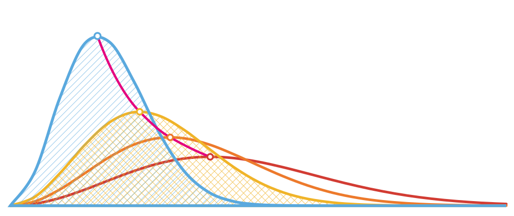

Visualizador de moléculas
Cole as coordenadas de uma molécula ou de um complexo, ou digite um SMILES, gire a estrutura, meça distâncias e ligações de hidrogênio e exporte a figura em PNG com resolução de publicação. Tudo roda no seu navegador: as coordenadas não são enviadas a nenhum servidor.
Aceita arquivo .xyz, o bloco CARTESIAN COORDINATES do ORCA ou o Standard orientation do Gaussian. Linhas que não são átomos são ignoradas. Ctrl+Enter também desenha.
"Estrutura 2D" faz a fórmula estrutural no estilo ACS (o padrão do ChemDraw). "Gerar 3D" cria uma geometria com o campo de força MMFF94s+, boa para ilustrar, não para publicar como resultado de cálculo.
Desenhe na área à direita, como no ChemDraw: escolha na barra a ligação, o anel ou o átomo e clique ou arraste. Clique num átomo e digite o símbolo (O, N, Cl…) para trocar o elemento. Ctrl+Z desfaz.